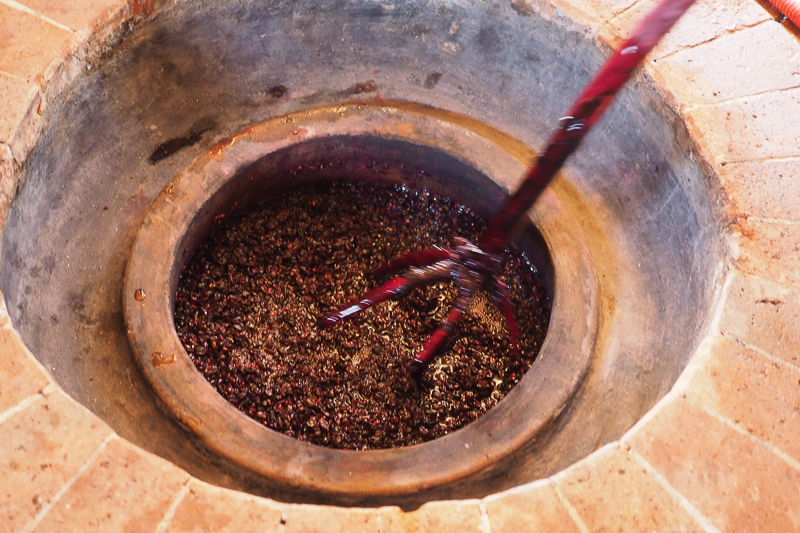
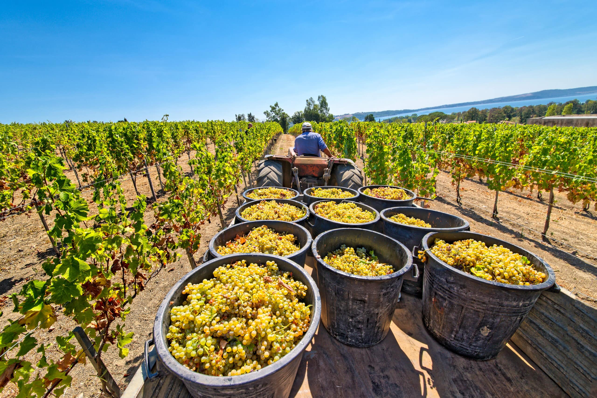
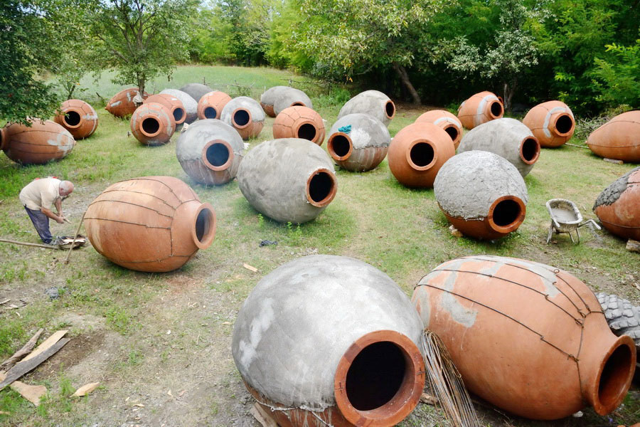
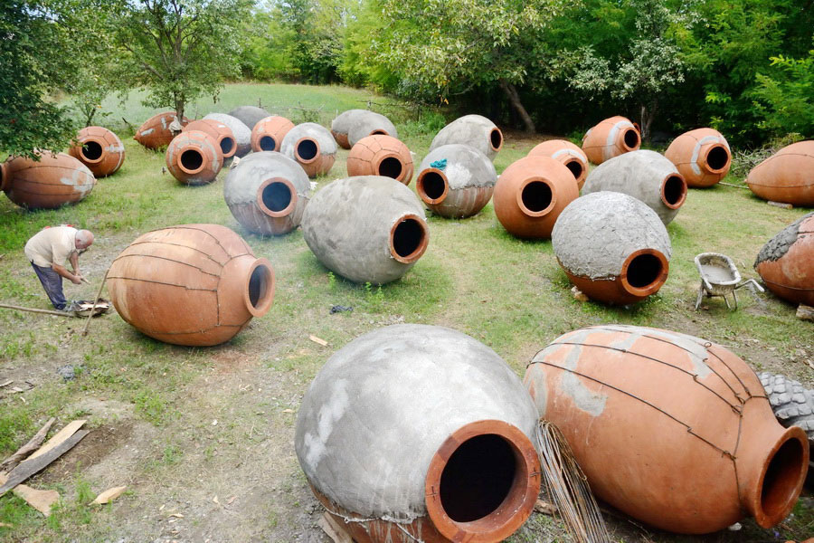
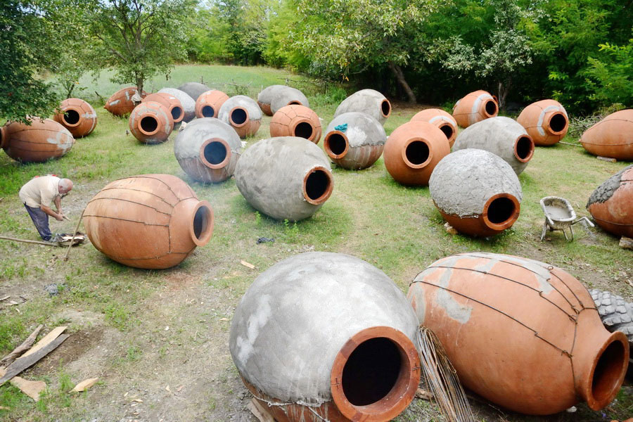
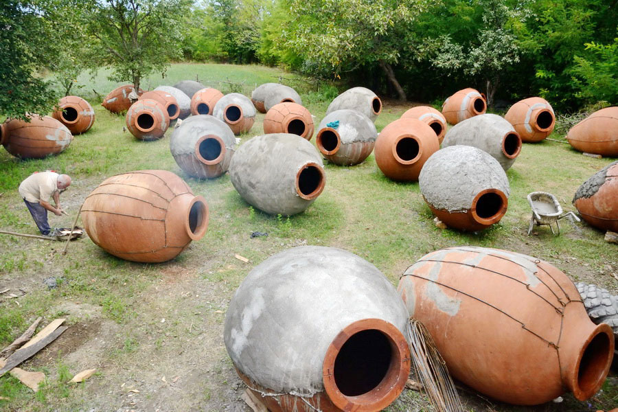

Gallery


 


The word “Marani” means wine cellar in Georgian. In Georgia, maranis are sacred spaces where wine is made, aged, and shared across generations.
Our club was founded in 2021 in Great Falls, Virginia with a mission to preserve and practice small-batch, minimal-intervention fermentation—allowing grapes to ferment naturally with their skins, stems, and seeds and avoiding added preservatives.
At Marani, members actively participate in every stage of the process and enjoy wine together in a communal, social setting rooted in history and friendship.
Harvesting, crushing, fermentation, and aging using natural, minimal-intervention methods (no added preservatives).
Regular tastings of club wines and traditional Georgian styles.
Shared meals, celebrations, and communal enjoyment of wine.
Learning about Georgian wine culture, history, and techniques.
Membership at Marani is open to those who value tradition, craftsmanship, and community.
Membership fees (if applicable) help cover materials, equipment, and events. Please contact us to learn more.

Marani is supported by donations that help cover materials, events, and the preservation of this ancient tradition.
Secure payments processed via Stripe (test mode).